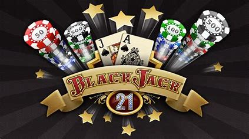

Online Game
Description or instructions for Online Game.
Blackjack
Blackjack is a popular gambling card game where players compete against the dealer to get closer to 21 without going over. Here are some details about how to play: Cards Aces count as 1 or 11, face cards as 10, and other cards as their face value.Dealing Players are dealt two cards face up, and the dealer receives two cards, but only one is face up. Play Players can choose to "hit" (draw another card) or "stand" (keep their current hand). The dealer also has a strategy, and an informed player can use the other players' and dealer's hands to decide when to hit, stand, or keep playing. Winning If a player's hand totals 21 on their first two cards, it's called a "natural" or "blackjack" and their bet is tripled. If a player beats the dealer without going over 21, they double their bet. If a player's hand goes over 21, it's called a "bust" or "break" and they lose their bet
Tetris
Tetris is primarily composed of a field of play in which pieces of different geometric forms, called "tetrominoes", descend from the top of the field.During this descent, the player can move the pieces laterally and rotate them until they touch the bottom of the field or land on a piece that had been placed before it.The player can neither slow down the falling pieces nor stop them, but can accelerate them, in most versions.The objective of the game is to use the pieces to create as many complete horizontal lines of blocks as possible. When a line is completed, it disappears, and the blocks placed above fall one rank.Completing lines grants points, and accumulating a certain number of points or cleared lines moves the player up a level, which increases the number of points granted per completed line.